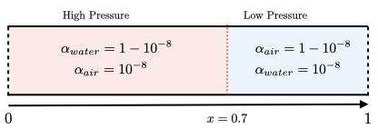
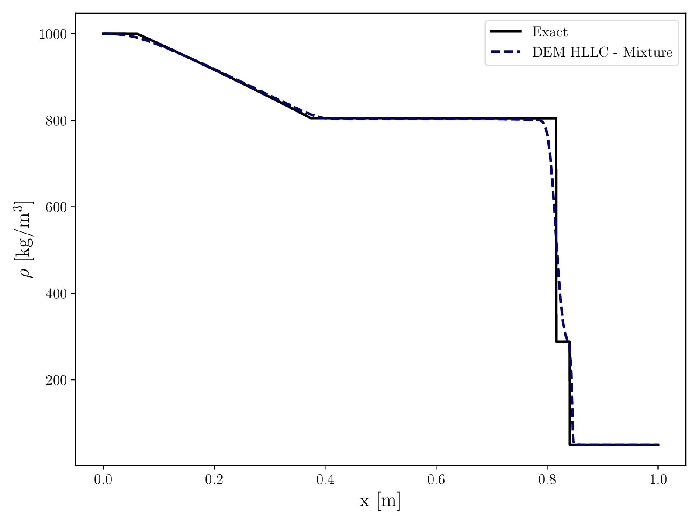
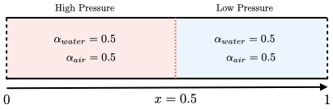
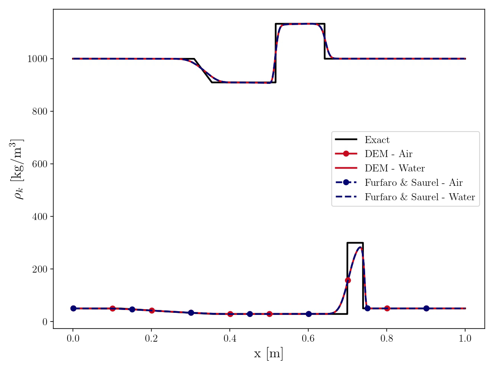
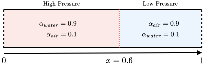

Shock tubes
Water–Air interface
This test case is important as it represents a limit case, realised with the Discrete Equation Method and the HLLC Riemann solver. Specifically, it is equivalent to solving the Euler equations with two pure fluids, resulting in an interface between the phases without mixture. Consequently, an exact solution exists, allowing comparison, as shown in Fig. 64. The equation of state used is stiffened gas with \(\gamma = 1.4\) and \(P_{\infty} = 0\) for air and \(\gamma = 4.4\) and \(P_{\infty} = 6 \times 10^{8}\). The input files for this test can be found in ./libTests/referenceTestCases/NEqDEM/1D/shockTubes/interfaceWaterAir/. The corresponding uncommented line in ECOGEN.xml is:
<testCase>./libTests/referenceTestCases/NEqDEM/1D/shockTubes/interfaceWaterAir/</testCase>


The initial characteristics of the run are:


Fig. 64 Mixture density comparison between exact solution and Discrete Equation Method.


Water–Air mixture with equal volume fraction
This test deals with shocks in mixture, realised with the Discrete Equation Method and the HLLC Riemann solver. Since we consider the volume fraction to be perfectly equal, this test is equivalent to solving the Euler equations twice with two pure fluids, allowing for a comparison with an exact solution. The outcome of this comparison is shown in Fig. 65, along with another solver developed by Furfaro & Saurel [FS15]. The equation of state used is stiffened gas with \(\gamma = 1.4\) and \(P_{\infty} = 0\) for air and \(\gamma = 4.4\) and \(P_{\infty} = 6 \times 10^{8}\) for water. Input files for this test are available in ./libTests/referenceTestCases/NEqDEM/1D/shockTubes/HPLeftWaterAirAlphaEqual_1e9/. The corresponding uncommented line in ECOGEN.xml is:
<testCase>./libTests/referenceTestCases/NEqDEM/1D/shockTubes/HPLeftWaterAirAlphaEqual_1e9/</testCase>


The initial characteristics of the run are:


Fig. 65 Phase density comparison between exact solution, Discrete Equation Method and Furfaro & Saurel solver.


Water–Air mixture with non-equal volume fraction
This test deals with shocks in mixture, realised with the Discrete Equation Method and the HLLC Riemann solver. The equation of state used is stiffened gas with \(\gamma = 1.4\) and \(P_{\infty} = 0\) for air and \(\gamma = 4.4\) and \(P_{\infty} = 6 \times 10^{8}\) for water. Input files for this test are available in ./libTests/referenceTestCases/NEqDEM/1D/shockTubes/HPLeftWaterAirAlphaDiff_2e8/. The corresponding uncommented line in ECOGEN.xml is:
<testCase>./libTests/referenceTestCases/NEqDEM/1D/shockTubes/HPLeftWaterAirAlphaDiff_2e8/</testCase>


The initial characteristics of the run are:
Remark: The default test case is realised with adaptive mesh refinement (AMR) with a maximum level of 3.